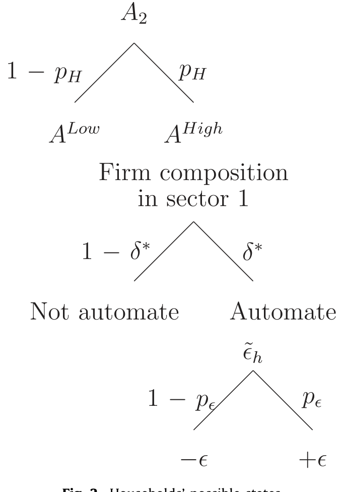
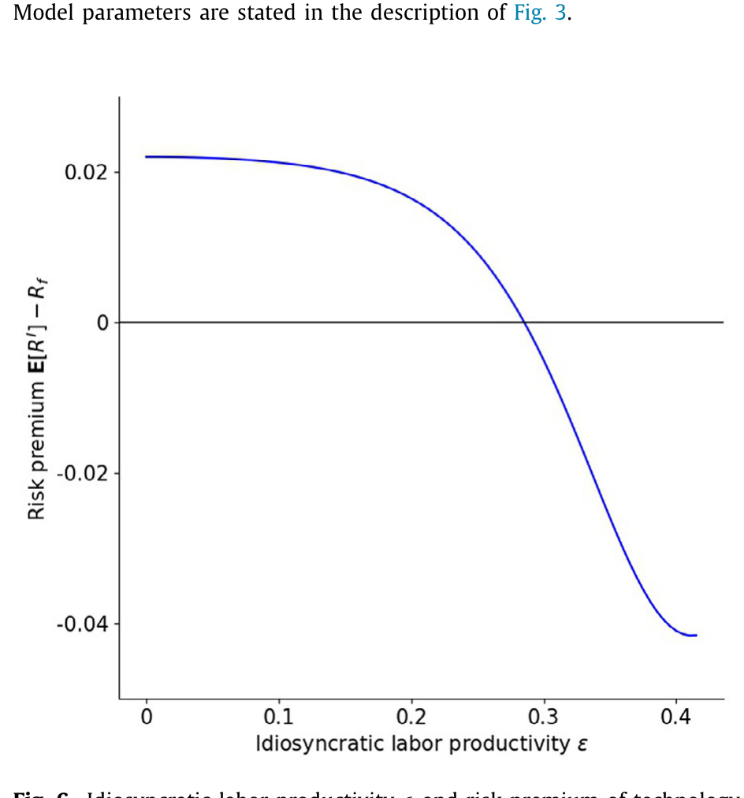
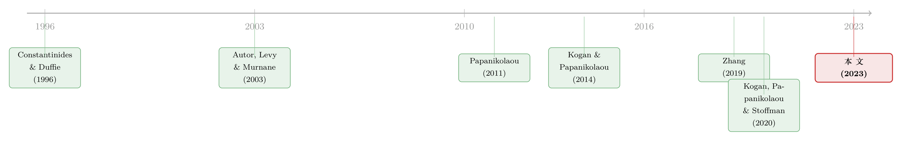

机器换人，为什么「被换的人」手里的股票反而更贵？
本文读的是 Knesl (2023, Journal of Financial Economics)：那些「最容易被机器替代」的劳动密集型公司，对自动化技术冲击的暴露是负的——技术越进步，它们的利润和市值反而越受挤压；正因为承担了这种「被替代」风险，这些公司每年要多付给投资者约 4% 的回报溢价。一个反直觉的结论，背后是一套关于「竞争把好处磨光、风险留给工人」的一般均衡逻辑。
1 引言：谁该为「机器换人」买单？
先讲一个几乎人人都会有的直觉。
过去四十年，机器人、软件这一类「自动化」技术（automation）大规模铺开，把原本由人来完成的常规任务（routine tasks）一点点交给了机器（Autor, Levy and Murnane, 2003）。于是一个看似显然的推论是：一家公司如果手里有大量「可以被机器替代的劳动力」，那么一旦自动化技术变得更便宜、更好用，它就该笑了——把人换成机器，成本下降，利润上升，股价上涨。技术进步，是这类公司的利好。
可如果你真的去数据里看一眼，故事是反过来的。
Knesl 发现：那些可替代劳动占比越高的公司，对技术冲击的暴露越是负的。换句话说，当「机器换人」的浪潮来临时，这些公司的市值不是涨，而是跌。更耐人寻味的是，正因为它们在「技术进步」这件事上是输家，投资者持有它们就得承担一种特别的风险，于是要求补偿——一个把这些公司多空对冲的组合，每年能赚到约 4% 的溢价。
这就是全文要反复讲透的那一个核心：自动化不是让「可被替代」的公司变值钱，而是让它们变成一种风险资产。 接着，一个自然的问题是——凭什么？明明把人换成机器能省钱，怎么市值反而掉了？要回答它，得先有一把能量出「一家公司有多少劳动力可被替代」的尺子，再有一套能解释「为什么省了钱反而亏了钱」的理论。
2 一把尺子：自动化潜能（AP）
要做实证，第一步是把「可替代劳动」量化。Knesl 构造了一个叫自动化潜能（Automation Potential, AP）的变量：
$$ AP_{f,t} = \frac{\text{displaceable labor}_{f,t}}{\text{capital stock}_{f,t}} $$
分子是「容易被资本替代的那部分劳动」，分母是公司当期的资本存量。它的精神是：一家公司每一块钱的资本背后，「悬」着多少随时可能被机器顶掉的人。
分子怎么来？Knesl 用美国劳工部的 O*NET 职业特征数据库，按任务的常规强度（routine intensity）给每个职业打分——常规、可程序化的任务越多，越容易自动化——再把职业层面的数据与 Compustat 的公司用工和资本数据合并。这条构造路径，承接的正是 Autor and Dorn (2013) 关于「常规任务被技术替代、推动就业与工资两极化」的实证传统。
这里有一个关键的、也是后面模型刻意去抓的事实：可替代劳动主要是一个行业层面的特征。AP 的横截面差异里，超过 70% 来自行业之间的差别，行业内部公司与公司的差别只占小头（论文另一处给出约 78% 的行业间、22% 的行业内分解）。这意味着，自动化这件事，与其说是「某家公司的选择」，不如说是「某个行业的命运」——这一点，决定了模型为什么要把竞争放在最中心的位置。
3 模型：省钱的好处，是怎么被「竞争」磨光的？
这一节是全文的「发动机」。直觉上「机器换人=省钱=赚钱」之所以错，错就错在它只算了一家公司的账，没算整个行业的账。
Knesl 写了一个两期一般均衡模型（two-period general equilibrium model）：很多家公司在产品市场上垄断竞争（monopolistic competition），家庭则承受不可保险的特质劳动收入冲击（uninsurable idiosyncratic labor-income shocks）。我们一步步把它拆开。
第一步：公司怎么生产。 经济有两个部门 \(s\in\{1,2\}\)。部门 1 起初是劳动型公司，部门 2 是资本型公司。每家公司用线性技术生产差异化产品，要么用劳动 \(Y^l_{f,s,t}=L_{f,s,t}\)，要么用资本 \(Y^k_{f,s,t}=K_{f,s,t}\)。一家资本型公司以价格 \(P^I_{s,t}\) 买入资本，它的现金流是
$$ CF^k_{f,s,t}=P^k_{f,s,t}\,Y^k_{f,s,t}-P^I_{s,t}\,K_{f,s,t}. $$
第二步：资本是怎么造出来、定价的。 部门专用资本由一个含技术水平 \(A_t\) 的线性技术生产，\(K_{s,t}=A_t L^k_{s,t}\)；安装环节有规模报酬递减（decreasing returns to scale），\(0<\alpha<1\)。把这些合起来，单家公司面对的资本投资价格是：
这条式子（论文 Eq. 5）是整台机器的「点火开关」：技术冲击 \(A_{\text{Low}}\to A_{\text{High}}\) 把 \(P^I_{s,t}\) 压低，于是「把人换成机器」第一次变得划算。
第三步：要不要自动化，是一个博弈。 这是真正关键的一步。劳动型公司可以付一笔调整成本 \(\kappa\)（adoption cost，安装、学习、停产损失等）转成资本型生产。它的最优决策是
$$ D_{f,1,2}=\max\bigl\{\,D^l_{f,1,2},\;\;D^k_{f,1,2}-\kappa\,\bigr\}. $$
注意：一家公司的利润，取决于它的产品价格相对于竞争对手的高低。自动化会压低本公司的产品价格，从而从对手那里抢来收入——所以单看一家，自动化有利可图。但同一个行业里所有公司是对称的，大家都有同样的激励和机会去自动化。 于是在对称的纳什均衡（symmetric Nash equilibrium）里，所有人都自动化了，谁也没抢到谁的份额，更低的产品价格不再是竞争优势——
于是反转出现：自动化不再是一种优势，而退化成一种「为了不掉队而必须付出的代价」。 大家把好处竞争光了，手里只剩下成本（那笔 \(\kappa\) 和被压低的产品价格）。结论于是顺理成章——一个利好自动化的技术冲击，反而降低了可替代劳动型公司的利润与市值。
这正是负暴露的来源。值得一提的是，这个「价值下跌」的机理，和文献里几个著名的故事都不一样：它不是 Greenwood and Jovanovic (1999) 里「在位者没能力采用新技术」，也不是 Pástor and Veronesi (2009) 里「风险性质改变」，而是公司明明成功采用了技术，却在均衡里把潜在租金竞争殆尽。竞争越激烈，这个负效应越强；竞争越弱，负效应越弱（论文指出，若极端到垄断，效应会反号为正）。
（关于「自动化/机器换人」在公司投资层面的另一面证据，可参见《机器人去哪儿了？——一场被高估的「第四次工业革命」》；关于技术变迁如何同时重塑产业与不平等，可参见《并购不只是换老板：它是技术「搬运工」，也是不平等的「放大器」》。）
4 家庭这一侧：风险的「价格」是怎么定出来的？
模型只解释了「为什么这些公司的现金流对技术冲击是负暴露」。但负暴露要变成正的风险溢价，还差一步——得有人「害怕」这种冲击。这就轮到家庭出场。
设定很巧。每个家庭有两个完全对称的配偶，因而对劳动收入风险有相同的暴露（这让模型避免了家庭间的异质性麻烦）。当部门 1 的公司自动化、把人挤出来时，被挤出的工人要转去生产部门专用资本，从旧岗位换到新岗位。换岗会带来一个纯特质的劳动生产率冲击：
$$ \tilde{\epsilon}_h=\begin{cases}+\epsilon & \text{with prob } 1/2\\[2pt] -\epsilon & \text{with prob } 1/2\end{cases},\qquad L_{h,1,2}=(1+\tilde{\epsilon}_h)\,H_{h,1,2}. $$
也就是说，换了新岗位，平均而言所有人都更有生产率了，但具体到某一个工人，他可能因祸得福、也可能一落千丈——而且这个冲击在他真正上岗之前无法观测、上岗后才兑现。这一设定有扎实的实证依据：Jacobson, LaLonde and Sullivan (1993)、Stevens (1997)、Topel (1990, 1991) 都记录了失业/换岗带来的大幅、持久且通常是负向的收入损失。
家庭的偏好取 Greenwood, Hercowitz and Krusell (1988) 那一类（GHH）形式：
$$ U\bigl(c_h,H_{h,1},H_{h,2}\bigr)=\mathbb{E}\!\left[\sum_{\tau}\beta^{\tau-t}\frac{1}{1-\gamma}\left(c_{h,\tau}-\chi\frac{H_{h,1,\tau}^{1+\theta}}{1+\theta}-\chi\frac{H_{h,2,\tau}^{1+\theta}}{1+\theta}\right)^{1-\gamma}\right]. $$
现在到了全文最漂亮的一个机关。风险价格的正负号，取决于个体劳动生产率冲击的方差 \(\mathrm{Var}(\tilde{\epsilon}_h)\)：
- 如果方差低：技术冲击让几乎所有人都受益、且差异不大，家庭并不害怕技术进步——风险价格甚至可以是正的，技术冲击是「好事」。
- 如果方差高：技术冲击意味着一部分人可能丢掉一大块劳动收入，且无法对冲、无法保险，家庭就讨厌技术冲击——此时，对技术冲击负暴露的资产成了「雪上加霜」的坏资产，必须给出正溢价才有人持有。
这正是 Constantinides and Duffie (1996) 「不完全市场下特质收入风险影响资产定价」那条思想在技术进步语境里的一次具体应用——市场不完全、特质风险不可保险，于是它「漏」进了总量技术冲击的风险溢价里。

Figure 2: Households’ possible states

Figure 6: Idiosyncratic labor productivity risk premium of techn(cid:15)olo(cid:16)gy
5 识别策略：怎么把「技术冲击」量出来、又怎么验证它被定价？
理论说完，回到数据。要检验这套逻辑，得回答两件事：技术冲击怎么测？它在横截面上到底有没有被定价？
技术冲击的代理变量。 Knesl 采用质量调整后的资本品相对价格变化（quality-adjusted relative price of capital goods），即所谓的投资专用技术冲击（investment-specific / I-shock）。它的理论基础来自 Greenwood, Hercowitz and Krusell (1997)、Cummins and Violante (2002)：生产资本品（机器、软件）的效率提升，会让资本品在质量调整后变得更便宜。这条相对价格在过去四十年持续下行，正与自动化的扩张同步。作为补充，Knesl 还用了自动化资本生产部门的相对生产率冲击，并验证两者高度一致。
核心检验。 把公司按 AP 排序，做一个多空组合：做多低 AP（最不易被替代）的底部五分位，做空高 AP（最易被替代）的顶部五分位，称为 KML（low AP minus high AP）。然后看两件事：
- 时间序列上，
KML组合的年度回报，能不能复制宏观的 I-shock 走势？论文 Fig. 1 显示二者高度同向——这把一个宏观变量（资本品相对价格）和横截面股票回报的动态第一次连在了一起。 - 横截面上，负暴露的公司是不是回报更高？沿着从「强负暴露」到「弱暴露」的组合，超额回报单调递减。
为排除其他解释，Knesl 做了公司层面的 Fama–MacBeth 回归：规模、账面市值比（book-to-market）等常见横截面预测变量，都无法解释这个溢价；而一旦控制技术冲击暴露，溢价就被吸收了。标准误按文献惯例做了 Newey and West (1987) 的异方差与自相关稳健处理。样本期为 1970–2015。
这套思路与 Papanikolaou (2011) 是「互补」的：他用资本品生产者的相对股价来度量技术冲击；Knesl 则反过来，用资本的潜在使用者（高/低可替代劳动公司）的股价信息来识别同一类冲击，发现了此前文献未曾记录的、可替代劳动公司股价与资本品相对价格之间的强共动。
6 主要结果：4% 的「被替代溢价」
把上面两条线拢到一起，论文的三个头条结果是：
- 负暴露是真的。 可替代劳动占比高的公司，对技术冲击的暴露显著为负——技术进步压它们的市值。
- 它能复制宏观冲击。
KML多空组合的回报，在时间序列上紧跟质量调整资本品相对价格的变化（Fig. 1）。 - 它被定价了。 对技术冲击强负暴露的公司，比弱暴露的公司每年多赚约
4%的回报溢价，且这一溢价无法被规模、价值等传统因子解释，却能被技术冲击解释。
一句话：「容易被机器替代」本身，就是一个被市场定价的风险维度。 这与 Kogan and Papanikolaou (2014) 形成呼应又有分工——他们定价的是技术冲击在「成长机会」维度上的作用，Knesl 定价的是它在「劳动被替代」维度上的作用，从而给技术冲击在横截面里安了一个新的角色。
7 文献脉络
把这条线索拉直来看，它其实是三股水流的汇合。
第一股，是不完全市场下的特质收入风险定价。 Constantinides and Duffie (1996) 奠基：当特质劳动收入冲击不可保险、又与总量状态相关时，它会进入风险溢价。这是 Knesl 家庭侧的全部理论根基。
第二股，是任务化的劳动经济学。 Autor, Levy and Murnane (2003)、Autor and Dorn (2013) 把「技术替代常规任务」讲清楚，并把就业与工资两极化归因于此——AP 这把尺子，就是从这里长出来的。
第三股，是投资专用技术冲击的资产定价。 Greenwood, Hercowitz and Krusell (1997) 给了「资本品相对价格=技术冲击」的宏观基础；Papanikolaou (2011) 用资本品生产者股价度量它；Kogan and Papanikolaou (2014) 把它定价到成长机会维度；Kogan, Papanikolaou and Stoffman (2020) 则刻画了「创造性破坏」如何在股市与不平等上留下印记。与 Knesl 最贴近的对照，是 Zhang (2019)——同样研究劳动—技术替代的资产定价含义，但 Zhang 明确说技术冲击不在其分析的中心；Knesl 恰恰把技术冲击放回了正中央。

本文的位置，正是这三股水流的交点：用「任务化」的尺子量出可替代劳动，用「投资专用冲击」的代理量出技术进步，再用「不完全市场特质风险」把负暴露翻译成正溢价。
8 评论与延伸（Q&A + 研究方向）
(a) 几个可能的疑问
Q：把人换成机器明明省成本，市值怎么会跌？这是不是和常识冲突？
不冲突，关键在「均衡」二字。单独一家公司自动化确实划算，但同行业所有公司对称、都有同样激励，于是大家一起自动化，把低价格带来的竞争优势相互抵消，最后好处被竞争磨光，只剩下调整成本和被压低的产品价格。降的是全行业的均衡利润，不是某一家的会计成本。
Q：AP 主要是行业层面的变量，那这个「溢价」会不会其实就是某个行业的回报，换个名字而已？
这是最该担心的地方。论文明确承认 AP 超过
70%的横截面差异来自行业间。它的辩护是：模型本就把行业间差异当作主角（行业内差异被有意抽象掉），且 Fama–MacBeth 中规模、价值等都无法解释该溢价、技术冲击能解释。但「行业 vs. 技术冲击暴露」的区分是否足够干净，仍值得读者自己掂量。
Q：技术冲击的代理变量（资本品相对价格）可信吗？
它有 Greenwood et al. (1997)、Cummins and Violante (2002) 的理论背书，且论文用 NBER-CES 制造业数据库和 BEA 投入产出表交叉验证了「相对价格下行 ≈ 自动化资本部门相对生产率上行」。但质量调整本身依赖 hedonic 方法（Wasshausen and Moulton, 2006），测量误差难以完全排除。
Q：为什么风险价格的正负号能两头都成立？这是模型的优点还是「太灵活」？
它取决于个体劳动生产率冲击的方差：方差低→人人受益→技术冲击是好消息；方差高→有人重创且不可保险→技术冲击是坏消息、负暴露资产要正溢价。这是优点（能内生地生成正负号），但也意味着「符号」本身不是模型的硬预测，需要外部参数或数据来钉死。
Q：和 Zhang (2019)、Kogan-Papanikolaou (2014) 到底差在哪？
Zhang 研究劳动—技术替代，但技术冲击不在其分析核心；KP (2014) 把技术冲击定价到「成长机会」维度。Knesl 的增量是把技术冲击定价到「劳动被替代」维度，并首次记录可替代劳动公司股价与资本品相对价格的强共动。
Q：4% 的溢价，是补偿「系统性风险」还是某种错误定价？
模型给的是风险解释——它来自不可保险的特质劳动收入风险在不完全市场中的定价（Constantinides-Duffie 渠道）。但实证上要彻底排除「错误定价/缓慢扩散」等替代解释并不容易，这也是这类横截面溢价共同的软肋。
(b) 几个可能的研究问题与提案
1. 把「被替代风险」搬到公司债与信用利差。 【经济故事】如果自动化压低可替代劳动公司的均衡利润与市值，那它同时也抬高了这些公司的违约概率与现金流波动——理应反映在信用利差里，而且可能比股票更敏感（债权人对下行更在意）。 【可行性】高。用 AP 排序，把 TRACE 公司债利差对技术冲击暴露做横截面回归即可；数据齐备，识别策略可直接平移本文。
2. 外资持有人会不会系统性地「躲开」高 AP 公司？ 【经济故事】被替代风险是一种与本地劳动力市场高度相关的风险。若外国投资者对这种「本地结构性风险」定价不同（或难以对冲），其持仓在高/低 AP 公司间可能呈现系统性倾斜。 【可行性】中。需要 FactSet/13F 或国别持仓数据与 AP 合并；难点在于把「外资偏好」与「行业偏好」分离开——可用行业内残差化的 AP 做识别。
3. 高 AP 公司的流动性，是否在技术冲击来临时系统性恶化？ 【经济故事】若技术冲击是高 AP 公司的坏消息，冲击期可能伴随做市商风险预算收紧、知情交易上升，从而在这些股票/债券上放大流动性折价。 【可行性】中。把 Amihud 非流动性或 bid-ask 利差对「I-shock × AP」交互项回归；股票端 doable，债券端样本更稀但更有看点。
4. AP 的「行业内」那 22%，能不能被单独定价？ 【经济故事】本文有意抽象掉行业内差异，但行业内仍有公司比同行更早、更深地自动化。若把行业固定效应吃掉后，残差 AP 仍能预测回报，说明这是公司层面的真实风险而非行业幌子。 【可行性】高。加行业 × 年固定效应、用组内 AP 重做 Fama–MacBeth 即可，是对本文最直接、最该做的稳健性延伸。
5. 把家庭侧的特质收入冲击拿真实微观数据「校准」。 【经济故事】模型符号的关键是 \(\mathrm{Var}(\tilde{\epsilon}_h)\)。若能用行政工资数据估计「换岗导致的收入分散度」随技术冲击如何变化，就能把模型的「符号自由度」钉死，真正检验机制。 【可行性】低到中。需要美国 LEHD/IRS 一类的雇主—雇员匹配数据，门槛高；但一旦拿到，识别力极强。
参考文献
Acemoglu, D., Restrepo (Pascual), P., 2020. Robots and jobs: evidence from US labor markets. Journal of Political Economy 128(6), 2188–2244.
Autor, D., Dorn, D., 2013. The growth of low-skill service jobs and the polarization of the US labor market. American Economic Review 103(5), 1553–1597.
Autor, D.H., Levy, F., Murnane, R.J., 2003. The skill content of recent technological change: an empirical exploration. Quarterly Journal of Economics 118(4).
Constantinides, G.M., Duffie, D., 1996. Asset pricing with heterogeneous consumers. Journal of Political Economy 104(2), 219–240.
Cummins, J.G., Violante, G.L., 2002. Investment-specific technical change in the United States (1947–2000): measurement and macroeconomic consequences. Review of Economic Dynamics 5(2), 243–284.
Jacobson, L.S., LaLonde, R.J., Sullivan, D.G., 1993. Earnings losses of displaced workers. American Economic Review 83(4), 685–709.
Knesl, J., 2023. Automation and the displacement of labor by capital: asset pricing theory and empirical evidence. Journal of Financial Economics 147(2), 271–296.
Kogan, L., Papanikolaou, D., 2014. Growth opportunities, technology shocks, and asset prices. Journal of Finance 69(2), 675–718.
Kogan, L., Papanikolaou, D., Stoffman, N., 2020. Left behind: creative destruction, inequality, and the stock market. Journal of Political Economy 128(3).
Newey, W.K., West, K.D., 1987. A simple, positive semi-definite, heteroskedasticity and autocorrelation consistent covariance matrix. Econometrica 55(3), 703.
Papanikolaou, D., 2011. Investment shocks and asset prices. Journal of Political Economy 119(4), 639–685.
Pástor, L., Veronesi, P., 2009. Technological revolutions and stock prices. American Economic Review 99(4), 1451–1483.
Stevens, A.H., 1997. Persistent effects of job displacement: the importance of multiple job losses. Journal of Labor Economics 15(1, Part 1), 165–188.
Topel, R., 1991. Specific capital, mobility, and wages: wages rise with job seniority. Journal of Political Economy 99(1), 145–176.
Zhang, M.B., 2019. Labor-technology substitution: implications for asset pricing. Journal of Finance.